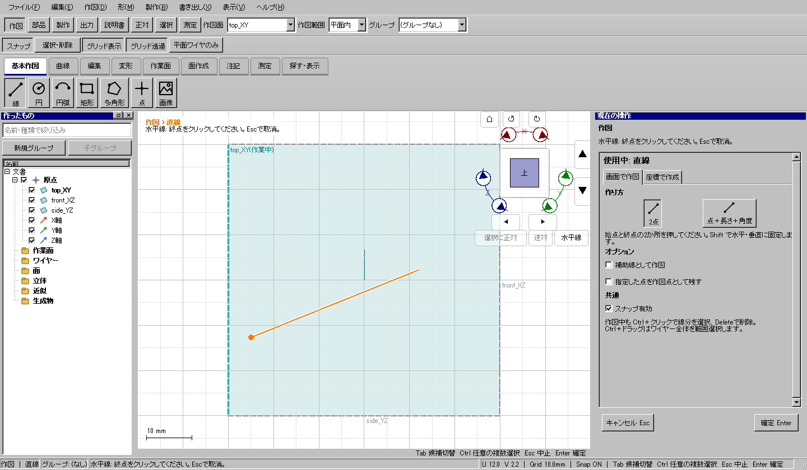

画面の水平線を指定
準備
必要な面を選んで、ビューキューブ下の「選択に正対」または「逆対」で見たい側を表示します。
操作手順
- ビューキューブ下の「水平線」を押します。「表示」メニューの「画面の水平線を指定」からも開始できます。
- 3Dビューで、水平にしたい方向の始点をクリックします。カーソルを動かすと始点からガイド線が伸びます。
- 終点をクリックします。既存の線がない場所も指定できます。

結果を確認
指定した2点を結ぶ方向が画面上の水平になります。カメラの注視点と倍率はそのままで、作図中の入力も続けられます。
取消・やり直し
終点を決める前は Esc で取り消せます。角度を変えるときは再び「水平線」を押して指定します。
進めない場合
始点と終点が近過ぎる場合は、終点を離れた位置でクリックしてください。